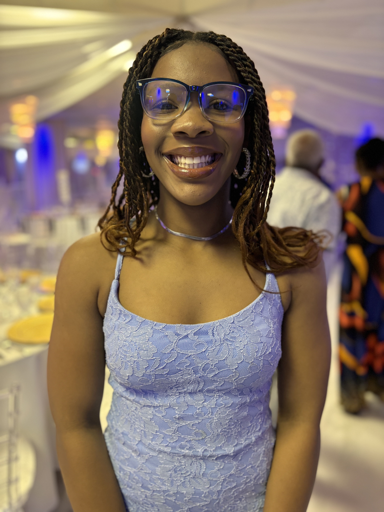

Ann-Dashna Jules
The Warmest Spirit

A heart that makes every moment warmer.
Gallery
An evening at our grandmother’s house — reuniting after I’d been away at college, like no time ever passed.

A trip to North Carolina to visit our uncle — new scenery, family stories, and memories we’ll always keep.

Your Sweet 16 — a moment that felt like a milestone, watching you shine and step into a new chapter.

Another moment from the North Carolina trip — simple, happy, and full of that “we’re together” feeling.

One of those “I’m done” moments — fed up with judo, but still iconic the way only you can be.
Your first concert — playing the violin beautifully and proving you were born to shine on stage.